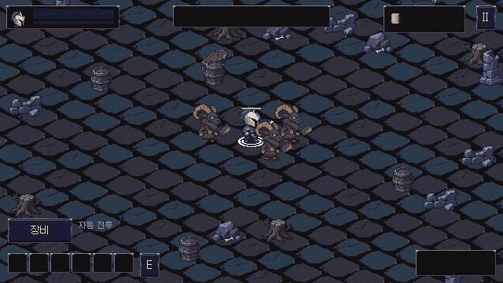

Tracefolio REPORTS & ISSUES
Tracefolio REPORTS & ISSUES 캠프 가디언작업 결과
캠프 가디언작업 결과기존 모션 반복을 걷어내고, 8클래스 공격을 새로 그려 연결했습니다. 클래스당 24자세, 총 192자세입니다.
검증 대기지난 작업 개별 복원 보고: 창기사 연속 찌르기 구현
작업 결과
당시 세션의 결과 보고를 복원했습니다. 아래 기록은 해당 작업 시점의 결과이며 최신 버전 재검증을 뜻하지 않습니다.
변경 내용
적용 내용
기존 모션 반복을 걷어내고, 8클래스 공격을 새로 그려 연결했습니다. 클래스당 24자세, 총 192자세입니다.
| 클래스 | 구현한 공격 |
|---|---|
| 창기사 | 상단→중단→하단, 성장에 따라 3~6연타 |
| 특대검 | 이동하며 몸 전체가 회전하는 훨윈드 |
| 검·방패 | 내려베기→올려베기 브랜디쉬형 2연격 |
| 궁수 | 표적을 분산하는 속사 |
| 쌍검 | 양손 교대 베기→교차 마무리·출혈 |
| 흑마도사 | 일직선 관통 마력창 |
| 도끼 | 내려찍기→낮은 횡베기·넉백 |
| 총 | 반동을 동반한 집중 점사 |
훨윈드 공식 자료, 브랜디쉬 자료, 스트레이프 공식 자료를 참고했습니다. 내장 imagegen으로 제작한 원본 경로·전체 프롬프트 (당시 로컬 자료; 공개 첨부 미확인)를 보존했습니다.
실제 Godot 렌더입니다. 순서는 창기사→특대검→검방패입니다.

구현·저장·Godot 임포트·컴파일 완료, 실제 실행에서 8클래스 피해 발생과 데이터 참조 오류 없음을 확인했습니다. 종료 시 텍스처 해제 경고는 남았으며, 청감·장기 밸런스는 미확인입니다. 관련 프로젝트 지침도 갱신했습니다. 푸시·배포는 수행하지 않았습니다.
제안 시간: 추가 범위 20~30분
실제: 최초 착수부터 16분 1초, 2026-11-17 15:01:48 KST 완료
검증
당시 세션 최종 보고에 명시된 검증 범위만 기록했습니다. 이번 등록에서는 게임 실행·청감·밸런스를 재검증하지 않았습니다.
남은 사항
현재 버전 동작은 미확인입니다. 기존 기록의 미확인·경고·후속 수정은 적용 내용에 보존했습니다. 원본 세션 전체 로그는 공개하지 않았습니다.
작업 시간
- 제안 시간: 당시 보고의 제안 시간 참조. 없으면 미기록.
- 실제로 완료된 시간: 당시 세션 종료: 2026-11-17T06:02:06.281Z / 세션 턴 실측 986초. 보고서 복원: 2026-11-17T07:40:29.494Z
- XERJ: 미사용 — 코드 검색 근거가 제공되지 않았습니다.